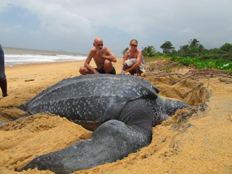

| Turtle Categories |
| Name |
Picture |
Description
| Map |
| 1.Green Turtle (Chelonia mydas) |
|
Green turtles have an average length of 1 meter and can weigh up to 230 kg (about 507.06 lb).
They are migratory and can be found in all tropical and sub-tropical seas such as the Indian, Atlantic, Caribbean and Pacific Oceans. Green turtles are
caught and killed to make ‘’turtle soup’’ which is a delicacy in many parts of the world. Their English name refers to the color of the fat found under
their shells, which is used to make the soup. Young green turtles are carnivorous. The adults, however, are herbivorous, feeding only on marine vegetation
like sea grass and marine algae. Green turtles are considered as ‘’Endangered’’ species today. |
|
| 2.Olive Ridley Turtle (Lepidochelys olivacea) |
|
The Olive Ridley turtle is the smallest of the marine turtles. The adults weigh less than 40 kg and measure up to 65 Cm in length.
They are found mostly in the tropical Indian, south Atlantic and Pacific Oceans. They are omnivorous, eating crustacean, fish and some marine vegetation. Olive Ridley turtles are considered
as ‘’Endangered’’ species today. Arribada-In a few countries, Olive Ridley turtle nests on a beach in a huge congregation known as an ‘’Arribada’’. This Spanish word means ‘’the arrival’’.
For example, in India, 600,000 Olive Ridley turtles have been recorded nesting on the same beach over a period of a few weeks. Despite the apparently large populations Olive Ridley turtles
are endangered. This is because so many individuals of this species depend on the security of a small number of important beaches for nesting. |
|
| 3.Leatherback Turtle (Dermochelys coriacea) |
 |
The Leatherback turtle is the largest of all the marine turtles. They can grow more than 2 meters in length and usually weigh about 600 kg (about 1322.77 lb).
The largest Leatherback ever found weighed 918 kg (about 2023.84 lb)! They have a predominant dorsal black color with variable degrees of white or paler spotting. Spots may be pinkish on the neck. Leatherback feed
exclusively on jellyfish and will travel long distances in search of their prey. They have been seen feeding on jellyfish in the waters of Arctic Circle, Leatherback can survive in the extreme cold because, unlike
other turtles, they can regulate their own body temperature because layers of fatty tissue insulate their bodies. The English name ‘’Leatherback’’ refers to their unique carapace. Leatherback turtles can dive to depths
of 1500 meters (about half the height of Mount St. Helens) in search of deep-sea jellyfish. At these depths the Leatherback’s body is subjected to tremendous water pressure, but its flexible shell does not break and so
the turtle can feed safely. Today, Leatherback turtles are considered as ‘’Critically Endangered’’. |
|
| 4.Hawksbill Turtle (Eretmochelys imbricata) |
 |
Hawksbills are also relatively small turtles; adults commonly weigh about 60 kg and measure up to 90cm (about 2.95 ft).
They inhabit tropical coastal waters around coral reefs and are mostly carnivorous. They prey on a large variety of animals including jellyfish, sponges and crustaceans.
The Hawksbill turtle gets its English name from its narrow birdlike beak, which it uses to catch animals hiding in small crevices. Hawksbill turtles sometimes eat toxic sponges.
Instead of being poisoned, Hawksbills can actually store the toxins in their own flesh. If human eats the flesh of a Hawksbill turtle, he can die from acute food poisoning.
The Hawksbill turtle is now highly endangered because for centuries, people around the world have killed them for their shell. Once cleaned and polished, the shell is crafted
into ‘’tortoiseshell’ ornaments. Today, Hawksbill turtles are considered as ‘’Critically Endangered’’ |
|
| 5.Loggerhead Turtle (Caretta caretta) |
|
Loggerheads grow to 1 metre in length and weigh up to 180 kg. This species nests on tropical beaches and also on beaches in some temperate locations such as the
Mediterranean and the South-East coast of the U.S.A. Although this species is one of the commonest species in the world, it is the most rare nesting species in Sri Lanka. From the Indian sub continent, they only nest in
Sri Lanka and they show unique colouration suggesting a unique population with unique genes, Therefore, it is very important to take immediate conservation measures to protect the Loggerhead turtles in Sri Lanka. Loggerheads
are primarily carnivorous and feed on mollusks and crustaceans. The name ‘’Loggerhead’’ refers to the large head which accommodates a large, muscular set of jaws, ideal for crushing mollusks and crustaceans. Loggerhead turtles
are now considered as ‘’Endangered’. |
|
| 6.Kemp’s Ridley Turtle (Lepidochelys kempii) |
|
Like the Olive Ridley turtles, Kemp’s Ridley turtles nest simultaneously in large numbers.
In 60,000 Kemp’s Ridley turtles nested on a beach in the Gulf of Mexico. Today there are less than 2,000 of this species left. They are the most rare
species of all the marine turtles. Conservation efforts have allowed the numbers of this species to gradually increase. Nevertheless their precarious
situation is a constant reminder of how easy it is to push a fragile marine turtle population close to extinction. Kemp’s Ridley turtles are now
considered as ‘’Critically Endangered’’. |
|
| 7.Flatback Turtle (Natator depressus) |
|
Flatback turtle grow to a length of 100cm and weigh as much as 90 kg.
They have dorsally uniform olive-green colouration. They nest only in Australia and although they are fairly common in the Torres
Strait and off Queensland, they are regarded as rare because of their limited distribution. Little is known of the diet of the
Flatback turtle although seaweed and cuttlefish have been found in their stomachs, Flatback turtles are now considered as ‘’Endangered’’. |
|
| 8.East Pacific Green or Black Turtle (Chelonia mydas agassizii) |
|
For many years scientists have disagreed about whether the Black turtle was
simply a colour Variation of the Green turtle or a separate species. Today the black turtle is recognised by many scientists as a colour
variation or a sub species of the green turtle. The Black turtle inhabits the East Pacific Ocean. They are now considered as ‘’Endangered’’. |
|